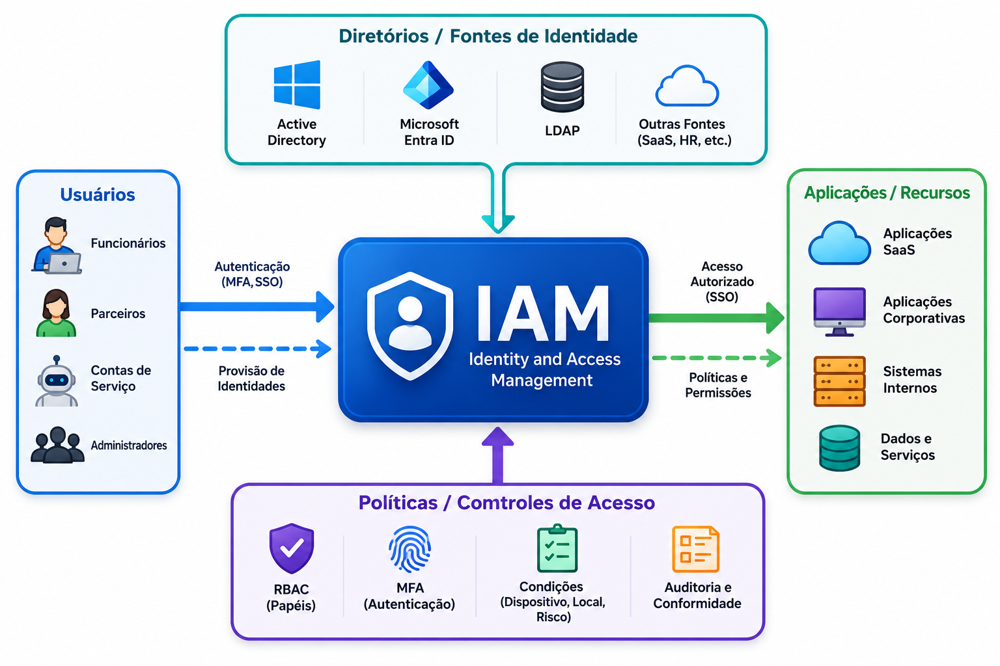
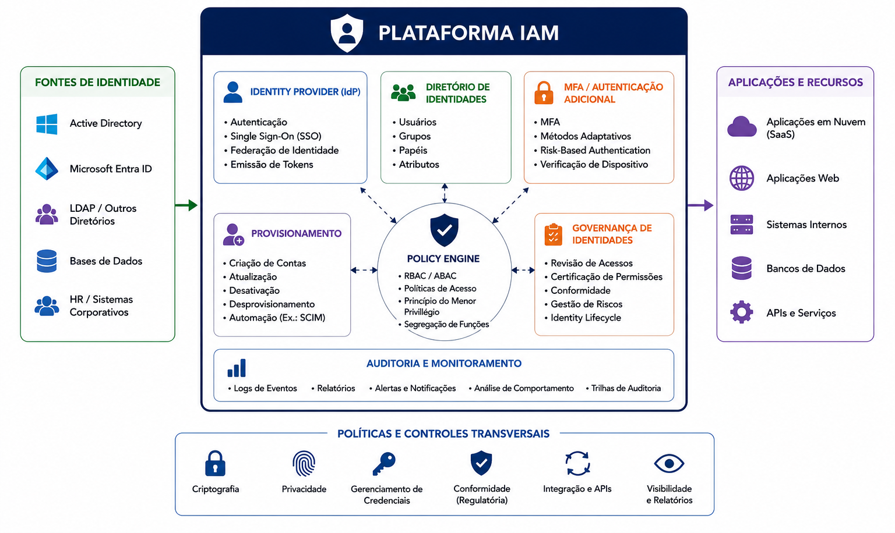
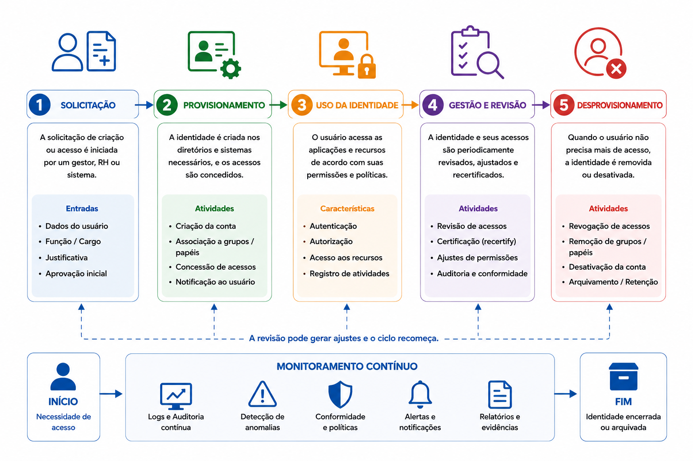
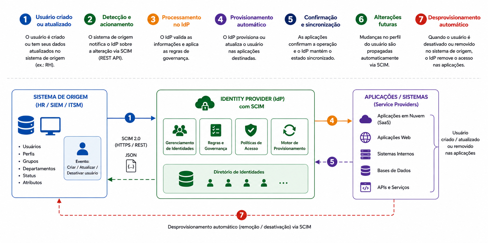
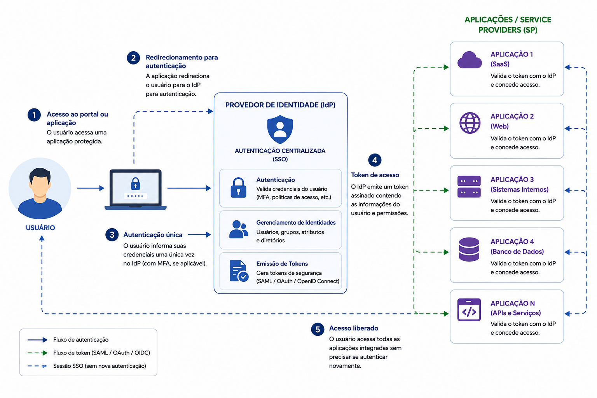
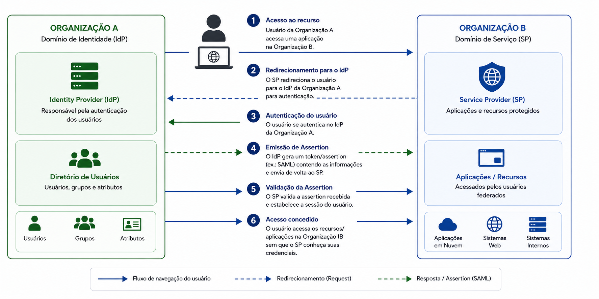
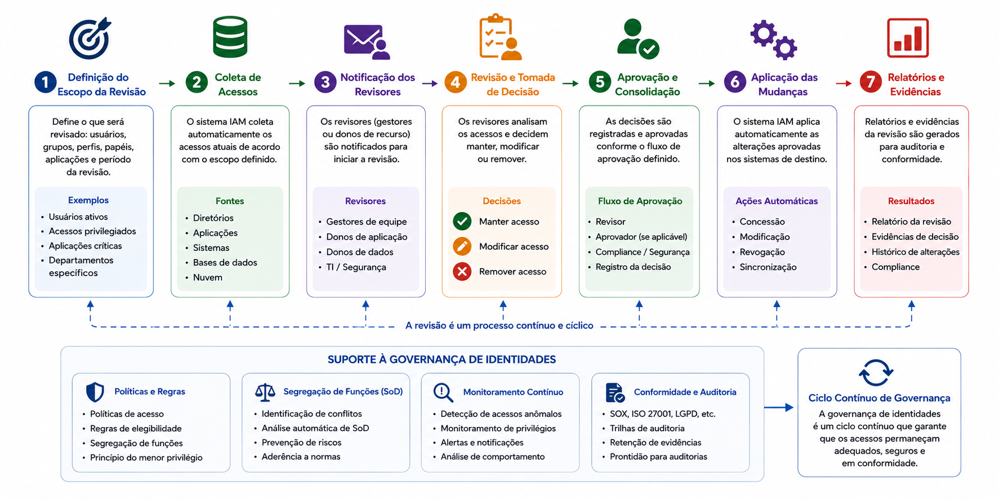
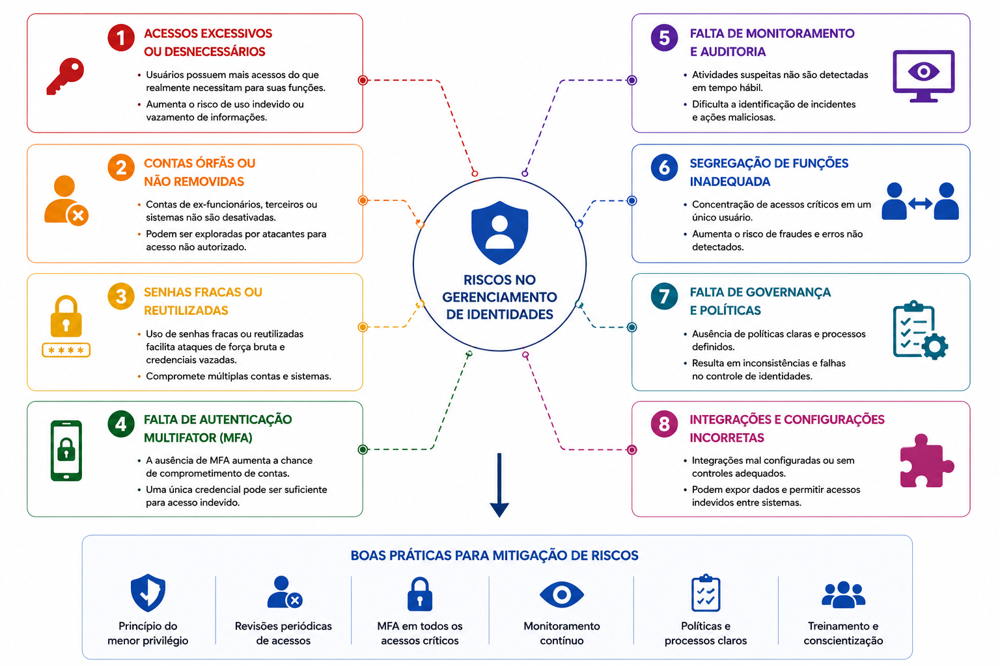
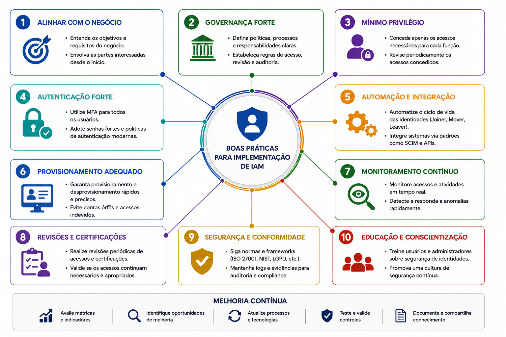
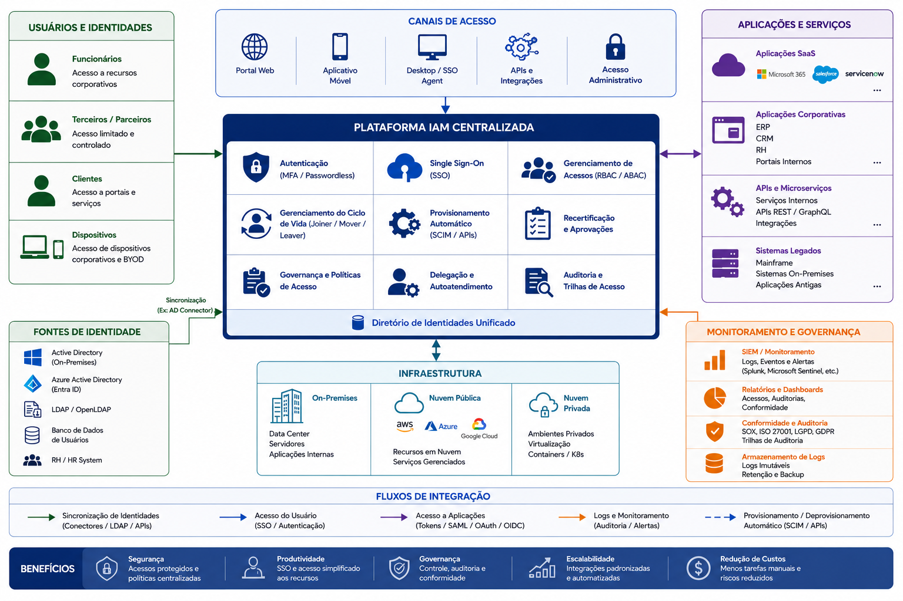

📋 Guia Rápido
Cybersecurity
Fundamentos da Segurança da Informação
🏛 Identity and Access Management (IAM)
Intermediário
IAM
Identidade Digital
Identity Lifecycle
Provisioning
Deprovisioning
Identity Governance
SSO
Federação
RBAC
ABAC
SCIM
50 minutos
📖 Resumo Executivo
Nas organizações modernas, praticamente todas as atividades dependem de identidades digitais. Funcionários, prestadores de serviço, parceiros comerciais, aplicações e até dispositivos necessitam de uma identidade para acessar recursos corporativos.
À medida que o número de usuários e sistemas cresce, administrar essas identidades manualmente torna-se inviável. Criar contas, atribuir permissões, remover acessos e garantir que cada usuário possua apenas os privilégios necessários passa a exigir processos estruturados e altamente automatizados.
É nesse contexto que surge o Identity and Access Management (IAM), um conjunto de processos, políticas e tecnologias responsável por controlar todo o ciclo de vida das identidades digitais e dos respectivos acessos aos recursos da organização.
Uma solução de IAM não se limita ao processo de autenticação. Ela integra autenticação, autorização, governança, auditoria, Single Sign-On, provisionamento automático, federação de identidades e revisão periódica de permissões.
Quando implementado corretamente, o IAM reduz riscos de acessos indevidos, melhora a experiência do usuário, simplifica a administração dos ambientes corporativos e auxilia no atendimento a requisitos de conformidade previstos em normas como ISO/IEC 27001, NIST Cybersecurity Framework, CIS Controls e LGPD.
Identity and Access Management é o conjunto de processos e tecnologias responsável por gerenciar quem pode acessar quais recursos, em quais condições e durante todo o ciclo de vida das identidades digitais.
Neste capítulo compreenderemos como o IAM funciona, conheceremos seus principais componentes e veremos como ele se tornou um dos pilares da Segurança da Informação nas organizações modernas.
Compreender o funcionamento do Identity and Access Management, identificar seus principais componentes, conhecer o ciclo de vida das identidades digitais e entender como soluções de IAM automatizam o gerenciamento de usuários, permissões e acessos em ambientes corporativos.
🏛 O que é Identity and Access Management?
Identity and Access Management (IAM) é o conjunto de políticas, processos e tecnologias utilizado para administrar identidades digitais e controlar o acesso aos recursos de uma organização.
Seu objetivo é garantir que cada identidade possua acesso apenas aos recursos necessários para desempenhar suas atividades, respeitando políticas de segurança, requisitos regulatórios e o Princípio do Menor Privilégio.
Na prática, uma plataforma IAM acompanha toda a jornada de uma identidade, desde sua criação até sua remoção definitiva, automatizando processos que anteriormente dependiam de atividades manuais.

O IAM não é apenas um software.
Ele representa um conjunto integrado de processos, pessoas,
políticas e tecnologias que trabalham em conjunto para garantir
que a identidade certa tenha acesso ao recurso certo, pelo tempo
certo e utilizando o menor privilégio necessário.
🎯 Objetivos do IAM
Uma solução de Identity and Access Management busca equilibrar segurança, produtividade e governança. Para isso, centraliza a administração das identidades e automatiza tarefas relacionadas ao gerenciamento de usuários e permissões.
✔ Redução de acessos indevidos.
✔ Proteção de identidades.
✔ Controle de privilégios.
✔ Provisionamento automático.
✔ Redução de tarefas manuais.
✔ Integração entre sistemas.
✔ Auditoria.
✔ Conformidade.
✔ Revisão periódica de acessos.
Esses objetivos tornam o IAM uma peça fundamental para organizações que utilizam ambientes híbridos, serviços em nuvem e um grande número de aplicações corporativas.
👤 O Conceito de Identidade Digital
Uma identidade digital representa qualquer entidade capaz de ser autenticada e autorizada dentro de um ambiente computacional.
Embora normalmente associada a pessoas, identidades também podem representar aplicações, serviços, dispositivos, máquinas virtuais, contas técnicas e APIs.
👤 Funcionários.
🤝 Terceiros.
🏢 Parceiros.
💻 Aplicações.
⚙ Serviços.
☁ Workloads.
📱 Dispositivos.
Nome.
E-mail.
Departamento.
Cargo.
Grupos.
Papéis.
Permissões.
Em ambientes corporativos modernos, o número de identidades não humanas frequentemente supera o de usuários. Contas de serviço, aplicações, APIs, containers, máquinas virtuais e dispositivos de IoT também precisam ser gerenciados e protegidos por soluções de IAM, ampliando significativamente a importância da gestão de identidades para a segurança da organização.
🏗 Componentes de uma Solução IAM
Uma plataforma de Identity and Access Management é composta por diversos componentes que trabalham de forma integrada para autenticar usuários, conceder permissões, aplicar políticas de segurança e registrar todas as operações relacionadas às identidades digitais.
Embora diferentes fabricantes utilizem nomenclaturas próprias, praticamente todas as soluções IAM compartilham uma arquitetura semelhante baseada em diretórios de identidade, provedores de identidade, aplicações corporativas e mecanismos de autenticação e autorização.
Compreender esses componentes facilita o entendimento de como ocorrem processos como Single Sign-On (SSO), Federação de Identidade, Provisionamento Automático e Governança de Acessos.

👤 Identity Provider (IdP)
O Identity Provider (IdP) é o componente responsável por autenticar usuários e emitir informações que comprovam sua identidade para outras aplicações.
Em vez de cada sistema manter sua própria base de usuários, as aplicações delegam a autenticação ao provedor de identidade, centralizando políticas de segurança, autenticação multifator, auditoria e gerenciamento de credenciais.
✔ Autenticação.
✔ MFA.
✔ Emissão de Tokens.
✔ Single Sign-On.
✔ Federação.
Microsoft Entra ID.
Okta.
Keycloak.
Ping Identity.
Google Cloud Identity.
O Identity Provider é a autoridade responsável por confirmar a identidade do usuário. Após essa validação, ele fornece às aplicações informações suficientes para que elas decidam se o acesso deverá ou não ser concedido.
🖥 Service Provider (SP)
O Service Provider (SP) representa a aplicação ou serviço que será acessado pelo usuário.
Em vez de solicitar usuário e senha diretamente, o Service Provider confia na autenticação realizada pelo Identity Provider, simplificando o gerenciamento de credenciais e reduzindo riscos de segurança.
Microsoft 365.
Salesforce.
GitHub.
SAP.
ServiceNow.
Aplicações internas.
Receber a identidade autenticada.
Validar tokens.
Aplicar autorização.
Liberar recursos.
Essa separação entre autenticação e consumo do serviço reduz a complexidade das aplicações e facilita sua integração com outras plataformas corporativas.
📂 Diretório de Identidades
O diretório de identidades armazena as informações utilizadas para representar usuários, grupos, dispositivos, aplicações e demais identidades digitais existentes na organização.
Além dos dados cadastrais, normalmente são armazenados atributos como departamento, cargo, grupos de segurança, papéis, permissões e outras informações utilizadas pelos mecanismos de autorização.
Nome.
E-mail.
Departamento.
Cargo.
Grupos.
Papéis.
Permissões.
Active Directory.
Microsoft Entra ID.
OpenLDAP.
Apache Directory.
FreeIPA.
🔐 Políticas de Segurança
As políticas de segurança definem como a autenticação e a autorização deverão ocorrer dentro da organização.
Elas estabelecem requisitos mínimos para autenticação, utilização de MFA, critérios de acesso, revisão de permissões e demais controles relacionados às identidades.
Exigir MFA.
Senha mínima.
Bloquear países.
Permitir apenas dispositivos corporativos.
Limitar horário de acesso.
✔ Redução de riscos.
✔ Padronização.
✔ Conformidade.
✔ Automação.
🔄 Integração Entre os Componentes
Embora cada componente possua responsabilidades específicas, todos trabalham de maneira integrada durante uma autenticação.
Quando um usuário solicita acesso a uma aplicação, o Service Provider redireciona a autenticação ao Identity Provider, que consulta o diretório de identidades, aplica as políticas de segurança e, caso todas as validações sejam concluídas com sucesso, emite um token contendo as informações necessárias para que o acesso seja concedido.
Uma das maiores vantagens das plataformas IAM modernas é a centralização da autenticação. Em vez de cada aplicação manter sua própria base de usuários, todas passam a confiar em um único provedor de identidade. Essa arquitetura reduz a quantidade de credenciais administradas, simplifica a implementação de MFA, facilita auditorias e permite aplicar políticas de segurança de forma uniforme em todo o ambiente corporativo.
🔄 O Ciclo de Vida das Identidades
Uma das principais responsabilidades de uma solução de Identity and Access Management consiste em administrar todo o ciclo de vida das identidades digitais.
Em uma organização, usuários ingressam, mudam de função, assumem novas responsabilidades e, eventualmente, deixam a empresa. Cada uma dessas mudanças exige adaptações imediatas nas permissões concedidas, garantindo que os acessos permaneçam compatíveis com a função desempenhada.
Sem processos automatizados, essas alterações costumam depender de solicitações manuais, aumentando a probabilidade de erros, atrasos e permanência de permissões desnecessárias.

👤 Joiner (Ingresso)
O termo Joiner representa a entrada de uma nova identidade na organização.
Essa identidade pode representar um colaborador recém-contratado, um prestador de serviços, um parceiro comercial, uma aplicação, uma conta técnica ou qualquer outra entidade que necessite interagir com recursos corporativos.
Nesse momento ocorre o provisionamento inicial da identidade, incluindo criação da conta, definição de grupos, atribuição de papéis e aplicação das políticas de segurança.
✔ Criação da identidade.
✔ Cadastro no diretório.
✔ Associação a grupos.
✔ Atribuição de papéis.
✔ Habilitação de MFA.
Disponibilizar ao usuário apenas os acessos necessários para iniciar suas atividades.
Quando um novo colaborador ingressa na empresa, sua conta pode ser criada automaticamente a partir das informações do sistema de Recursos Humanos, recebendo grupos, permissões e aplicações compatíveis com seu cargo.
🔄 Mover (Mudança de Função)
Durante sua permanência na organização, um usuário pode mudar de departamento, assumir novas responsabilidades ou ser promovido.
Nessas situações, a solução IAM ajusta automaticamente suas permissões, removendo acessos que deixaram de ser necessários e concedendo aqueles compatíveis com a nova função.
Esse processo reduz significativamente o acúmulo de privilégios, um dos problemas mais comuns encontrados em auditorias de segurança.
Mudança de departamento.
Promoção.
Nova função.
Transferência de unidade.
✔ Remoção de grupos antigos.
✔ Inclusão em novos grupos.
✔ Atualização de papéis.
✔ Revisão de privilégios.
🚪 Leaver (Desligamento)
O processo de Leaver ocorre quando a identidade deixa de possuir vínculo com a organização.
Nesse momento, todos os acessos concedidos anteriormente devem ser removidos de forma rápida e controlada para evitar riscos de segurança.
A demora no bloqueio de contas representa uma das principais causas de existência de contas órfãs, frequentemente exploradas em ataques contra ambientes corporativos.
✔ Bloqueio da conta.
✔ Revogação de tokens.
✔ Remoção de grupos.
✔ Cancelamento de MFA.
✔ Encerramento da identidade.
Redução de riscos.
Conformidade.
Proteção contra acessos indevidos.
Contas que permanecem ativas após o desligamento de um colaborador representam uma vulnerabilidade crítica. Caso suas credenciais sejam comprometidas, poderão ser utilizadas para acessar recursos corporativos sem despertar suspeitas imediatas.
⚙ Automatização do Ciclo de Vida
Uma das maiores vantagens das plataformas IAM modernas é a automatização de todas as etapas do ciclo de vida das identidades.
Em vez de depender de processos manuais executados por diferentes equipes, o IAM integra sistemas corporativos e executa automaticamente as alterações necessárias sempre que ocorre uma mudança na situação do usuário.
Sistema de RH.
ERP.
Active Directory.
Microsoft Entra ID.
Google Workspace.
ServiceNow.
✔ Menor tempo de provisionamento.
✔ Redução de erros.
✔ Menor esforço operacional.
✔ Maior conformidade.
Além de aumentar a eficiência operacional, a automatização reduz o intervalo entre uma mudança organizacional e a atualização dos acessos do usuário, fortalecendo a segurança da informação.
O modelo Joiner–Mover–Leaver (JML) é considerado uma das práticas fundamentais de Governança de Identidades. Organizações maduras integram seus sistemas de Recursos Humanos ao IAM para que admissões, movimentações internas e desligamentos disparem automaticamente workflows de provisionamento e desprovisionamento. Essa integração reduz significativamente a existência de contas órfãs, privilégios excessivos e atrasos na atualização dos acessos, fortalecendo a postura de segurança e o atendimento a requisitos de conformidade.
⚙ Provisionamento Automático
Criar, atualizar e remover contas manualmente torna-se uma tarefa complexa quando uma organização possui centenas ou milhares de usuários distribuídos entre diferentes aplicações e ambientes.
Para reduzir esse esforço operacional, as plataformas de Identity and Access Management utilizam mecanismos de provisionamento automático capazes de sincronizar identidades entre diversos sistemas corporativos.
Essa automação garante que alterações realizadas em uma fonte confiável de dados sejam propagadas rapidamente para todos os serviços integrados, reduzindo atrasos, inconsistências e riscos de segurança.

📤 O que é Provisionamento?
Provisionamento é o processo responsável por criar e configurar automaticamente identidades digitais e conceder os acessos necessários para que um usuário possa desempenhar suas atividades.
Esse processo normalmente envolve a criação da conta, definição de grupos, atribuição de papéis, habilitação da autenticação multifator e integração com aplicações corporativas.
✔ Criar conta.
✔ Definir grupos.
✔ Atribuir papéis.
✔ Configurar MFA.
✔ Liberar aplicações.
Redução de erros.
Maior agilidade.
Padronização.
Automação.
📥 O que é Desprovisionamento?
O desprovisionamento corresponde ao processo inverso, removendo ou revogando automaticamente os acessos quando uma identidade deixa de necessitar deles.
Além do desligamento de colaboradores, esse processo também é executado quando ocorre mudança de função, encerramento de contratos, substituição de aplicações ou expiração de acessos temporários.
Bloquear contas.
Remover grupos.
Revogar tokens.
Cancelar MFA.
Excluir permissões.
✔ Eliminar contas órfãs.
✔ Reduzir privilégios.
✔ Atender auditorias.
✔ Aumentar a segurança.
Em organizações maduras, o desprovisionamento costuma ser executado imediatamente após o desligamento do colaborador, reduzindo significativamente a janela de exposição da empresa.
🔄 SCIM (System for Cross-domain Identity Management)
O SCIM é um padrão aberto desenvolvido para simplificar o gerenciamento automatizado de identidades entre diferentes plataformas.
Por meio de APIs padronizadas, uma solução IAM pode criar, alterar, bloquear ou remover usuários em aplicações compatíveis, eliminando a necessidade de integrações específicas para cada sistema.
Essa padronização facilita a integração entre provedores de identidade e aplicações SaaS, reduzindo custos de implementação e manutenção.
Criar usuários.
Atualizar atributos.
Bloquear contas.
Excluir identidades.
Gerenciar grupos.
✔ Padronização.
✔ Automação.
✔ Integração simplificada.
✔ Redução de erros.
📡 APIs e Workflows
Embora o SCIM seja amplamente utilizado, muitas organizações também empregam APIs proprietárias e mecanismos de workflow para automatizar processos de provisionamento.
Esses workflows podem incluir etapas de aprovação, validações de conformidade, notificações automáticas e execução de tarefas administrativas antes da criação definitiva da conta.
Solicitação.
Aprovação.
Provisionamento.
Notificação.
Auditoria.
ServiceNow.
SAP.
Oracle.
Microsoft Entra ID.
Active Directory.
Google Workspace.
🏢 Benefícios da Automação
Automatizar o provisionamento e o desprovisionamento reduz a dependência de atividades manuais e aumenta significativamente a qualidade da gestão de identidades.
Além da redução do tempo necessário para disponibilizar novos acessos, a automação melhora a consistência das permissões, simplifica auditorias e reduz a ocorrência de falhas humanas.
✔ Provisionamento em minutos.
✔ Atualizações automáticas.
✔ Menor carga administrativa.
✔ Integração entre plataformas.
✔ Menos contas órfãs.
✔ Menos privilégios excessivos.
✔ Revisões facilitadas.
✔ Melhor conformidade.
Um dos principais indicadores de maturidade em Identity and Access Management é o nível de automação do ciclo de vida das identidades. Organizações que utilizam SCIM, APIs e workflows integrados conseguem reduzir drasticamente o tempo entre uma alteração organizacional e a atualização efetiva dos acessos, diminuindo riscos operacionais e fortalecendo a governança de identidades.
🔑 Single Sign-On (SSO)
À medida que as organizações passaram a utilizar dezenas ou até centenas de aplicações diferentes, tornou-se impraticável exigir que os usuários realizassem uma autenticação independente para cada sistema.
O Single Sign-On (SSO) surgiu para resolver esse problema, permitindo que o usuário realize uma única autenticação e utilize diversas aplicações sem a necessidade de informar suas credenciais repetidamente.
Além de melhorar significativamente a experiência do usuário, o SSO reduz o número de senhas administradas, simplifica a adoção da autenticação multifator e fortalece o controle centralizado de identidades.

⚙ Como Funciona o SSO
Em uma arquitetura de Single Sign-On, as aplicações deixam de realizar autenticação diretamente e passam a confiar em um único provedor de identidade.
Quando o usuário tenta acessar uma aplicação, ela verifica se já existe uma sessão autenticada. Caso não exista, o usuário é redirecionado para o Identity Provider.
Após concluir a autenticação, o provedor de identidade emite um token contendo informações sobre a identidade do usuário e o retorna à aplicação solicitante.
Enquanto essa sessão permanecer válida, novas aplicações poderão ser acessadas sem exigir novo processo de autenticação.
Usuário → Identity Provider → Autenticação → Emissão de Token → Aplicação → Acesso concedido.
🎯 Benefícios para os Usuários
O Single Sign-On melhora significativamente a experiência de uso, reduzindo o número de autenticações necessárias durante a rotina de trabalho.
Como consequência, diminui a necessidade de memorizar múltiplas senhas e reduz a tendência de reutilização de credenciais entre diferentes aplicações.
✔ Um único login.
✔ Menos senhas.
✔ Acesso mais rápido.
✔ Maior produtividade.
✔ Menor reutilização de senhas.
✔ MFA centralizado.
✔ Sessões controladas.
✔ Menor exposição de credenciais.
🏢 Benefícios para a Organização
Para a organização, o SSO simplifica a administração das identidades e reduz significativamente os custos operacionais relacionados ao gerenciamento de credenciais.
Como todas as autenticações passam pelo Identity Provider, torna- se possível aplicar políticas centralizadas de segurança, exigir Autenticação Multifator, registrar eventos de auditoria e bloquear rapidamente acessos comprometidos.
✔ Administração centralizada.
✔ Políticas únicas.
✔ Auditoria simplificada.
✔ Integração entre aplicações.
✔ Menos chamados de suporte.
✔ Redução de redefinições de senha.
✔ Provisionamento facilitado.
✔ Melhor governança.
⚠ Limitações e Cuidados
Embora o Single Sign-On ofereça inúmeras vantagens, sua adoção também exige alguns cuidados importantes.
Como diversas aplicações passam a depender do mesmo provedor de identidade, a disponibilidade e a segurança desse componente tornam-se críticas para o funcionamento da organização.
Da mesma forma, o comprometimento da identidade de um usuário pode permitir acesso a múltiplos sistemas caso mecanismos adicionais de proteção não estejam implementados.
Comprometimento da conta.
Indisponibilidade do IdP.
Sessões excessivamente longas.
Tokens comprometidos.
MFA obrigatório.
Conditional Access.
Sessões limitadas.
Monitoramento contínuo.
Identity Protection.
Um erro comum é considerar o Single Sign-On apenas uma solução de conveniência. Na realidade, ele representa também um importante mecanismo de fortalecimento da segurança, pois permite concentrar a autenticação em um único ponto, aplicar políticas consistentes, habilitar MFA para todas as aplicações integradas e registrar eventos de auditoria de forma centralizada. Quando combinado com Autenticação Adaptativa e Zero Trust, o SSO torna-se um dos principais componentes das arquiteturas modernas de identidade.
🌐 Federação de Identidade
À medida que as organizações passaram a utilizar serviços em nuvem e aplicações fornecidas por terceiros, tornou-se inviável manter uma base de usuários independente para cada sistema.
A Federação de Identidade surgiu para permitir que diferentes organizações ou aplicações estabeleçam uma relação de confiança, possibilitando que uma identidade autenticada em um ambiente seja reconhecida por outro sem necessidade de criar uma nova conta.
Em vez de armazenar credenciais em cada aplicação, os serviços passam a confiar na autenticação realizada por um Identity Provider, reduzindo a quantidade de senhas administradas e simplificando a experiência do usuário.

🤝 Relação de Confiança
O elemento central da Federação de Identidade é o relacionamento de confiança (Trust) estabelecido entre as partes envolvidas.
Nesse modelo, a aplicação deixa de validar diretamente a identidade do usuário e passa a confiar nas informações emitidas por um provedor de identidade previamente autorizado.
Essa confiança é construída por meio de certificados digitais, assinaturas criptográficas, troca de metadados e protocolos padronizados.
👤 Usuário.
🏛 Identity Provider.
🖥 Service Provider.
🔐 Relação de confiança.
✔ Evitar múltiplas contas.
✔ Compartilhar autenticação.
✔ Simplificar integrações.
✔ Centralizar segurança.
📄 SAML (Security Assertion Markup Language)
O SAML é um dos protocolos mais utilizados para Federação de Identidade em aplicações corporativas.
Após autenticar o usuário, o Identity Provider gera uma Assertion, um documento digital assinado criptograficamente contendo informações sobre a identidade e seus atributos.
O Service Provider valida essa Assertion e concede acesso ao usuário sem solicitar novas credenciais.
Baseado em XML.
Assertions assinadas.
Amplamente utilizado em ambientes corporativos.
Microsoft 365.
Salesforce.
SAP.
ServiceNow.
Workday.
🔑 OAuth 2.0 e OpenID Connect
Embora frequentemente mencionados em conjunto, OAuth 2.0 e OpenID Connect possuem finalidades diferentes.
O OAuth 2.0 foi desenvolvido para delegação de acesso, permitindo que uma aplicação utilize recursos de outra em nome do usuário, sem conhecer sua senha.
Já o OpenID Connect (OIDC) adiciona uma camada de autenticação ao OAuth 2.0, permitindo comprovar a identidade do usuário e fornecer informações sobre ela de maneira padronizada.
Delegação de acesso.
Tokens de autorização.
Permissões entre aplicações.
Autenticação.
Identity Tokens.
Informações do usuário.
OAuth 2.0 não foi criado para autenticar usuários.
Sua função principal é conceder autorização para que uma
aplicação utilize recursos protegidos. Quando há necessidade de
identificar o usuário autenticado, normalmente utiliza-se OpenID
Connect sobre o OAuth 2.0.
☁ Federação em Ambientes Modernos
Atualmente, a Federação de Identidade está presente na maioria das arquiteturas corporativas, permitindo integrar aplicações internas, serviços SaaS, ambientes híbridos e plataformas em nuvem.
Essa abordagem reduz significativamente o número de credenciais administradas e possibilita que políticas de autenticação, Autenticação Multifator, Conditional Access e auditoria sejam aplicadas de forma centralizada.
Microsoft Entra ID.
Google Workspace.
AWS.
GitHub Enterprise.
Salesforce.
Aplicações internas.
✔ Experiência unificada.
✔ Segurança centralizada.
✔ Menos senhas.
✔ Integração simplificada.
✔ Melhor governança.
Federação de Identidade é um dos principais pilares das arquiteturas modernas de IAM. Ao estabelecer relações de confiança entre organizações e aplicações, torna-se possível centralizar autenticação, aplicar políticas de segurança consistentes e integrar centenas de sistemas sem duplicar bases de usuários. Esse modelo é amplamente utilizado por provedores de serviços em nuvem e constitui a base para soluções de Single Sign-On, Zero Trust e colaboração entre diferentes ambientes corporativos.
🏛 Identity Governance
Administrar identidades não significa apenas criar contas e conceder acessos. Também é necessário garantir que esses acessos permaneçam corretos durante todo o ciclo de vida do usuário.
A Identity Governance reúne processos e controles voltados para auditoria, revisão de acessos, certificação de permissões e conformidade, permitindo que a organização tenha visibilidade contínua sobre quem possui acesso a cada recurso.
Seu principal objetivo é assegurar que todas as permissões permaneçam justificadas, reduzindo privilégios excessivos e identificando rapidamente situações que possam representar riscos para a organização.

📋 Revisão Periódica de Acessos
Ao longo do tempo, usuários mudam de função, assumem novas responsabilidades ou deixam de utilizar determinadas aplicações. Caso essas alterações não sejam acompanhadas, permissões antigas podem permanecer ativas sem necessidade.
Por esse motivo, soluções IAM realizam revisões periódicas dos acessos concedidos, permitindo que gestores confirmem quais permissões continuam sendo necessárias.
Grupos.
Papéis.
Perfis.
Aplicações.
Privilégios.
Contas administrativas.
✔ Remoção de excessos.
✔ Atualização de permissões.
✔ Maior conformidade.
✔ Redução de riscos.
✔ Certificação de Acessos
Durante uma campanha de certificação, gestores recebem uma lista com os acessos concedidos aos usuários sob sua responsabilidade.
Cada permissão deve ser analisada e classificada como aprovada, revogada ou necessitando de ajustes.
Esse processo garante que somente acessos realmente necessários permaneçam ativos.
Gestor.
RH.
Segurança.
Auditoria.
Administrador IAM.
✔ Controle contínuo.
✔ Evidências para auditoria.
✔ Redução de privilégios.
✔ Maior governança.
Um gerente recebe trimestralmente uma relação contendo todos os acessos concedidos à sua equipe. Após revisar cada item, ele confirma apenas aqueles indispensáveis às atividades dos colaboradores, solicitando a remoção dos acessos desnecessários.
⚖ Segregação de Funções (SoD)
Outro conceito importante dentro da Governança de Identidades é a Segregação de Funções (Segregation of Duties — SoD).
Seu objetivo é impedir que um único usuário acumule permissões capazes de permitir fraudes, erros ou conflitos de interesse.
Em processos financeiros, por exemplo, o usuário responsável por aprovar pagamentos não deve possuir permissão para cadastrá-los, reduzindo a possibilidade de fraudes internas.
Criar fornecedor.
Aprovar pagamento.
Liberar compra.
Auditar o próprio processo.
✔ Redução de fraudes.
✔ Separação de responsabilidades.
✔ Controles internos.
✔ Atendimento a normas.
📑 Auditoria e Conformidade
As soluções IAM registram eventos relacionados à criação de contas, autenticações, alterações de permissões, campanhas de certificação e demais operações executadas sobre as identidades digitais.
Esses registros permitem demonstrar conformidade durante auditorias e facilitam investigações de incidentes de segurança.
Logins.
Alteração de grupos.
Mudança de papéis.
Provisionamento.
Desprovisionamento.
Aprovações.
ISO/IEC 27001.
LGPD.
NIST CSF.
CIS Controls.
SOX.
📊 Benefícios da Governança de Identidades
Ao combinar revisão periódica, certificação de acessos, Segregação de Funções e auditoria contínua, o IAM passa a oferecer uma visão completa sobre todas as identidades existentes na organização.
Essa governança reduz riscos operacionais, facilita o atendimento a requisitos regulatórios e fortalece o controle sobre acessos críticos.
✔ Menor privilégio.
✔ Menos contas órfãs.
✔ Menos privilégios excessivos.
✔ Maior rastreabilidade.
✔ Auditorias simplificadas.
✔ Conformidade.
✔ Evidências.
✔ Transparência.
A maturidade de um programa de IAM não é medida apenas pela capacidade de autenticar usuários, mas pela capacidade de governar continuamente as identidades. Organizações maduras sabem quem possui acesso a cada recurso, por qual motivo esse acesso foi concedido, quem o aprovou, quando deverá ser revisado e quais evidências demonstram sua conformidade. Essa visibilidade é um dos principais diferenciais das arquiteturas modernas de Identity and Access Management.
🚨 Principais Ameaças ao IAM
Assim como qualquer componente crítico da infraestrutura de TI, uma solução de Identity and Access Management também pode ser alvo de ataques.
Na maioria das situações, os criminosos não procuram explorar falhas do software IAM propriamente dito, mas sim abusar de credenciais comprometidas, permissões excessivas ou processos de governança inadequados.
Compreender essas ameaças permite implementar controles capazes de reduzir significativamente a superfície de ataque relacionada às identidades digitais.

👻 Contas Órfãs
Contas órfãs são identidades que permanecem ativas mesmo após o encerramento do vínculo do usuário com a organização.
Esse cenário normalmente ocorre quando processos de desprovisionamento não são executados corretamente ou dependem de atividades manuais.
Como essas contas deixam de ser utilizadas regularmente, muitas vezes passam despercebidas durante auditorias e representam um alvo atrativo para atacantes.
Desligamentos.
Projetos encerrados.
Contas técnicas esquecidas.
Falhas no desprovisionamento.
✔ Acesso não autorizado.
✔ Persistência do atacante.
✔ Não conformidade.
✔ Aumento da superfície de ataque.
🔐 Contas Privilegiadas
Contas administrativas possuem permissões capazes de alterar configurações críticas, administrar usuários, modificar políticas e acessar informações sensíveis.
Caso uma dessas identidades seja comprometida, o impacto tende a ser muito maior do que o comprometimento de uma conta comum.
Administrador de domínio.
Administrador Entra ID.
Root Linux.
Administrador AWS.
Administrador Banco de Dados.
PAM.
MFA.
Just-In-Time.
Just Enough Administration.
Auditoria contínua.
📈 Privilégios Excessivos
O acúmulo gradual de permissões é um problema frequente em ambientes corporativos.
Ao longo dos anos, usuários mudam de função, participam de novos projetos e recebem acessos adicionais, sem que os privilégios antigos sejam removidos.
Esse cenário viola o Princípio do Menor Privilégio e amplia o impacto potencial de uma credencial comprometida.
Maior impacto de invasões.
Movimentação lateral.
Acesso desnecessário.
Riscos de fraude.
RBAC.
ABAC.
Revisões periódicas.
Certificação de acessos.
🕵 Shadow IT e Identidades Não Gerenciadas
Shadow IT corresponde ao uso de aplicações, serviços ou recursos não aprovados pela organização.
Além de dificultar a governança, esses serviços frequentemente mantêm identidades fora do controle do IAM, impedindo a aplicação de políticas corporativas de autenticação e auditoria.
Serviços SaaS.
Armazenamento em nuvem.
Aplicativos colaborativos.
Ferramentas gratuitas.
Falta de auditoria.
Credenciais reutilizadas.
Ausência de MFA.
Vazamento de dados.
🛡 Boas Práticas para Implementação do IAM
A adoção de uma plataforma IAM deve ser acompanhada por políticas e processos capazes de garantir que as identidades permaneçam seguras durante todo o seu ciclo de vida.
Mais do que implantar uma tecnologia, é necessário estabelecer uma estratégia contínua de governança, automação e monitoramento.

- Automatizar o ciclo de vida das identidades.
- Aplicar o Princípio do Menor Privilégio.
- Exigir MFA para todos os usuários.
- Utilizar Single Sign-On.
- Realizar revisões periódicas de acessos.
- Eliminar contas órfãs rapidamente.
- Monitorar contas privilegiadas.
- Centralizar autenticação em um Identity Provider.
- Auditar continuamente eventos relacionados às identidades.
- Integrar o IAM à estratégia de Zero Trust.
🏢 IAM em Ambientes Corporativos
Atualmente, praticamente todas as grandes organizações utilizam alguma solução de Identity and Access Management para administrar identidades e controlar acessos aos seus recursos.
Essas plataformas concentram autenticação, Single Sign-On, Federação de Identidade, MFA, provisionamento automático e governança em um único ambiente.

Microsoft Entra ID.
Okta.
Google Cloud Identity.
Ping Identity.
Keycloak.
AWS IAM.
✔ Administração centralizada.
✔ Melhor experiência do usuário.
✔ Redução de riscos.
✔ Conformidade.
✔ Escalabilidade.
📚 O que aprendemos?
- O conceito de Identity and Access Management (IAM).
- Os principais componentes de uma solução IAM.
- O ciclo de vida das identidades digitais.
- Como funciona o provisionamento e o desprovisionamento.
- O papel do SCIM na automação de identidades.
- O funcionamento do Single Sign-On.
- Os conceitos de Federação de Identidade, SAML, OAuth 2.0 e OpenID Connect.
- A importância da Governança de Identidades.
- As principais ameaças relacionadas ao IAM.
- As boas práticas para implementação em ambientes corporativos.
🚀 Próximo Capítulo
Neste capítulo vimos como o Identity and Access Management centraliza a administração das identidades digitais, automatiza o ciclo de vida dos usuários e fortalece a governança dos acessos.
Entretanto, existe um conjunto de identidades que exige controles ainda mais rigorosos: as contas privilegiadas.
Como proteger administradores de domínio, contas Root, contas de serviço e demais identidades com privilégios elevados?
Essa será a temática do próximo capítulo da série, dedicado ao Privileged Access Management (PAM), onde estudaremos cofres de credenciais, acesso Just-In-Time (JIT), Just Enough Administration (JEA), gerenciamento de sessões privilegiadas e monitoramento de contas críticas.
➡ Ler o próximo capítulo
✅ 🔺 Tríade CIA
✅ 🔒 Confidencialidade
✅ 🛡 Integridade
✅ ⚡ Disponibilidade
✅ 🔐 Criptografia
✅ 👥 Controle de Acesso
✅ 🆔 Autenticação
✅ ✔ Autorização
✅ 🔑 Autenticação Multifator (MFA)
✅ 🏛 Identity and Access Management (IAM)
➡ ☁ Zero Trust
⬜ 🔐 Privileged Access Management (PAM)
⬜ 🌐 Active Directory e Microsoft Entra ID
⬜ 🔑 Single Sign-On e Federação de Identidade